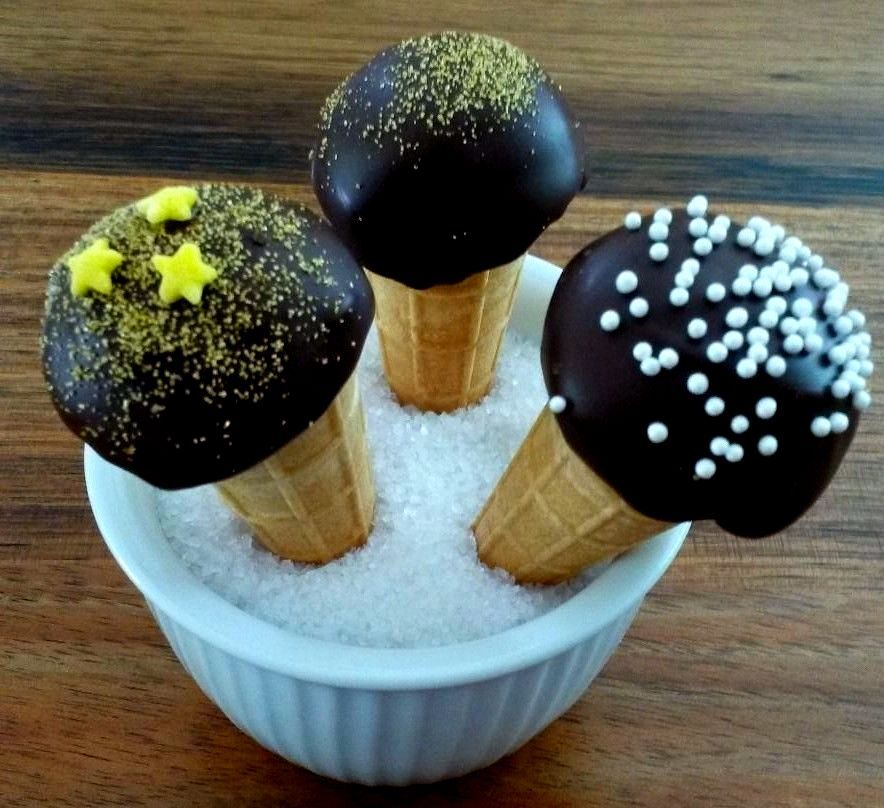
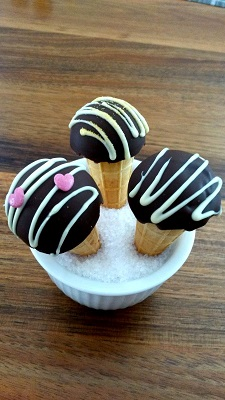

Not Quite Ice Cream is a local business based in West Pennant Hills, Australia.
It was started by Shirley Chan who is a mum of two beautiful girls.
Like every mum, Shirley knows children want their party food to be fun
and colourful. Shirley made Yumini (short for 'Yummy Mini'
) for one of her daughters' birthday party to add the 'wow' factor for
her and her little friends. Yumini was a huge success.
Yumini was well received by both adult and children. In additional to
adding fun in everyday life, Shirley hopes that Yumini can help to raise
funds for cancer support and other causes.
Cones for Causes.
Yumini are mini cones topped with a chocolate coated bliss ball that are
made to look like an ice-cream. They are hand- made with all natural
quality ingredients, with no artificial flavours, no artificial colours*
and no preservatives. Yumini are filled with 100% love and fun.
You can recreate these Yumini at home using a DIY kit. No special
equipment is needed.
The first Yumini was topped with Rocky Road. After attending a family
birthday party, it was obvious Yumini needed a topping that can be enjoyed
by all generations. So Yumini topped with a 'cocobliss ball' was created.
Yumini are great for birthday parties, weddings, functions, baby showers
and girls night-in.
The colourful 'treasure box' and fun element of Yumini make them an attractive
item for your organisation's fundraising event. No refrigeration
is needed, so you can take them to any outdoor events.
Yumini can help you fundraise in two ways:
1) Sale of the Yumini DIY Kits
The DIY kit comes in a brown paper kraft box and can be customised to
your organisation's logo. Samples of some finished Yumini can be
supplied.
2) Sale of the Yumini
We can supply all the materials needed for you and your supporters
to make the Yuminis for sale in your event.
We can customise your order size (material enough for multiple of 15 Yuminis).
Display stand is available for hire/purchase. Just contact us to discuss.
The DIY kit contains all that material needed for making these Yuminis. Basic crockery is all that needed. No mixing required.
There are 4 easy steps:
1) Take the bliss ball portions out of its packaging. Roll and chill in freezer for 5 minutes
2) Melt two types of chocolates
3) Coat the rim with some melted chocolate and attach the bliss ball on the mini cone
4) Coat the bliss ball with the melted chocolate and decorate. See details at this link
It only takes 10 minutes from opening the kit to finish.
And the result? Irresistible, colourful delicious Yuminis.
The Yumini DIY kit is very popular with children. It provides a hands-on education tool for pre schools, primary schools and OOSH. Children will learn about temperature, different states of matter (solid melts into a liquid and into solids again with cooling) and sustainability. Parents love them too as it is easy to clean up afterwards.
Watch this video to see how it is done!
* may contain traces of sesame, peanut or other tree nuts. Contains milk, gluten, wheat and soy. Gluten free option available. See FAQ.

1. Is Yumini Australian made?
Yes. Yumini and the DIY kits are handmade in the Hills District in Sydney,
Australia using local and imported ingredients. Shirley sources Australian
ingredients whenever possible.
2. Where can I buy Yumini or the DIY kit
Please email to notquiteicecream@gmail.com to order. Simply state your
name, contact details and the quantity required. We will reply to you within
2 working days.
3. Can I buy the Yumini DIY kits for children's party?
Absolutely! For parties, we found that children can manage two cones on
their own. Each kit to contain enough material for 3 children.
4. Do you send Australia wide?
Yes - the DIY kit can be shipped Australia wide. We use Australia Post.
5. Do you have gluten free Yumini?
The bliss balls, dipping chocolate and all sprinkles topping are gluten
free. The only gluten containing component of Yumin is the mini ice cream
cone. The cone can be replaced by a lollypop stick. Just indicate that
you need a gluten free Yumini DIY kit when you order.
6. What is tempering?
Tempering chocolate is an essential step for making smooth, glossy, evenly
colored coating for your dipped chocolates. If you plan to make Yumini
in advance for your event, we suggest that you temper the dark chocolate
for dipping. We can provide you with instruction to how to temper
chocolate when you order Yumini.
7. What are the charities or causes that you have in mind?
Shirley has her local primary school in mind to start for their fund raising
effort. Other organisations including Breast Cancer Network Australia,
Canteen and Save the Children are other charities Shirley and her husband
are personally supporting. We hope that Yumini can contribute to these
charities.
With your support, these little cones could truly become Cones for Causes.
If you have a cause that you are passionate about, please contact us to
discuss how Yumini can help your cause.
8. How should I store them?
Store Yumini at room temperature in an airtight container in cool dry
places and away from direct sunlight once they are made. Refrigeration
is not recommended as the cool temperature may cause the chocolate to '
bloom' - a white colour layer on top of the chocolate. Blooming does not
affect the quality of chocolate, just the appearance.
9. How long does it last once I receive them?
Yumini is made with all natural ingredients with no preservatives. 'Best
By' date is indicated on the label. For Yumini the date is two months from
when they are made to ensure they are at the freshest.
10. Do you have any other topping or flavours?
We are always trying to think of new topping and flavours. Please send
us your idea for new topping and decoration ideas.
11. What kind of packaging do you use?
All the packaging used in Yumini Kit are made from plant, not plastic.
The brown paper carton is completely compostable and sustainably-sourced
. The clear bags used are cellulose based and can be compostable . Paper
cups are biodegradable and compostable. All materials are BPA-free, compostible
and biodegradable.
Shirley only uses ingredients that she feels comfortable for her own children.
All ingredients are carefully selected to include good nutrition without
sacrificing the fun factor.
There are no artificial flavours or colours in any of the Yumini.
They are preservative and sulphite free. Go to FAQ for information
on the gluten free option.
A description of what is in Cocobliss Yumini:
Organic tropical coconut perfectly balances the sweetness from Australian
dried sultana, currants and organic honey. Australian full cream milk powder
give it a creamy mouthfeel and Australian popcorn lends a slight crunch.
The cone top is enrobed in a high quality dark chocolate.
Finished Yumini with mini star sprinkles: $29.90 for 12 (minimum
order)
DIY kit starts at $11.95 per kit. Each kit makes 6 Yuminis.
For schools or other charities, please contact Shirley to discuss
how Yumini may assist with your fundraising event.
We have white chocolate and milk chocolate and orange flavoured chocolate
coating available. Different decorations, such as edible glitter (golden,
silver and snow white), 100s and 1000s of different mixed colours or single
colours, love hearts and stars of mixed colours are available. Contact
us for decoration ideas and quotes.
Please allow two weeks notice to handcraft your Yumini individually.
Pick up available at West Pennant Hills. Yumini DIY pack is ready for order
anytime. We deliver DIY pack Australia wide (plus postage and handling).
For quotes for larger order and to customise your topping and decoration,
please contact Shirley directly. For order, please email: notquiteicecream@gmail.com
#ConesForCauses
#YuminiConesForCauses
https://www.facebook.com/notquiteicecream
Email us at : notquiteicecream@gmail.com
We are located in Sydney's Hills District at West Pennant Hills